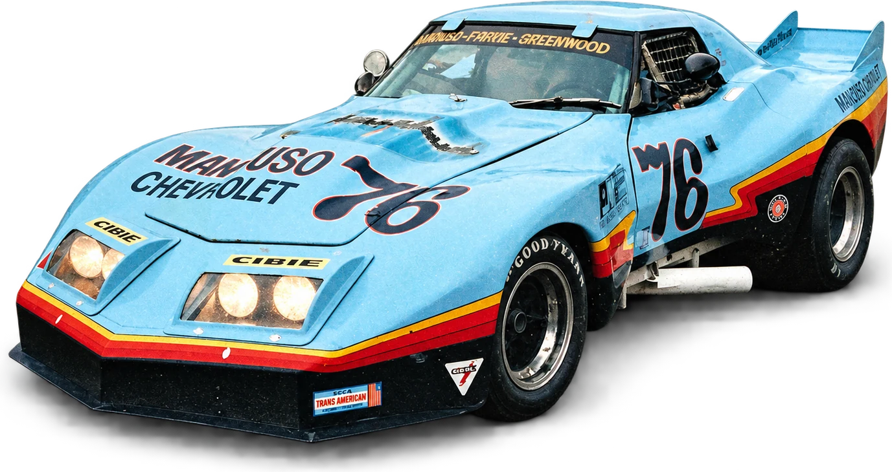
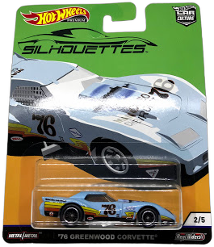

Four generationsof the Mancuso automobile business
I
Benjamin
Pioneer dealer · Batavia, NY
Founds the family automobile business in 1923. Rick would later name his grandfather as the man who inspired him.
II
Jim
Mancuso Chevrolet · Skokie
Opens Mancuso Chevrolet in 1953. A road rallyer, and a columnist for Ward's: “Mancuso on service”.
III
Rick & Rob
The dealership goes racing
Sell cars with their father. Rick races from 1972 and in 1981 founds Lake Forest Sports Cars; Rob is 1986 SCCA Midwest Council champion.
IV
Adam
Father and son on track
Rick's son. 25 years at Lake Forest Sports Cars / Ferrari of Lake Forest as COO / VP. Go-karts at 12, Skip Barber Racing School at Road America; races Lolas alongside his father.
“OK Used Cars” — Mancuso Chevrolet. Date and place not recorded.
76
1972 · 1976
Rick takes it racing.The #76, Mancuso Chevrolet's own Corvette.

Rick Mancuso took the green flag in 1972, in a 1958 Corvette prepared to B-Production specs. By 1976 Mancuso Chevrolet had its own Corvette on track — the pale-blue #76, by the Revell kit's account the first “customer” car John Greenwood built.

Hot Wheels, “’76 Greenwood Corvette”.
Le Mans · 1976
000mph · Mulsanne
1976America's bicentennial. The French government invites Mancuso and his team to race a Corvette at Le Mans.
12–13 JuneThe 24 Hours of Le Mans.
GreenwoodThe wide-body Corvette, “Spirit of Le Mans 76”.
RickStays home to run the business. His teammates drive.
222 mphOn the Mulsanne Straight in qualifying, the fastest entry on the course.
Hour 8A fuel malfunction ends its race.
June 1976
Le Mans222 mph on the Mulsanne
For America's bicentennial the French government invited Mancuso and his team to race a Corvette at Le Mans. Rick stayed home to run the business and turned the Greenwood wide-body Corvette over to his teammates.
It was the fastest entry on the course; a fuel malfunction ended its race in the eighth hour.
In 2026 the Greenwood Corvettes were inducted into the IMSA Hall of Fame.
Source: Fra Noi, February 2005; IMSA, March 2026 (222 mph, qualifying).
The Lake Forest years
Dealers and racersLake Forest Sports Cars, and father and son
Lake Forest Sports CarsRick's dealership for Ferrari, Maserati and Aston Martin. Since sold.Father and sonAdam and Rick. They raced Lola Sports Racers in SCCA, in Aston Martin racing green.In AutoWeek“The Little Car That Could”: Rich Ceppos on a day of hot laps in Rick's Lola Sports 2000.
Sources: Fra Noi, February 2005; AutoWeek, 14 March 2005.